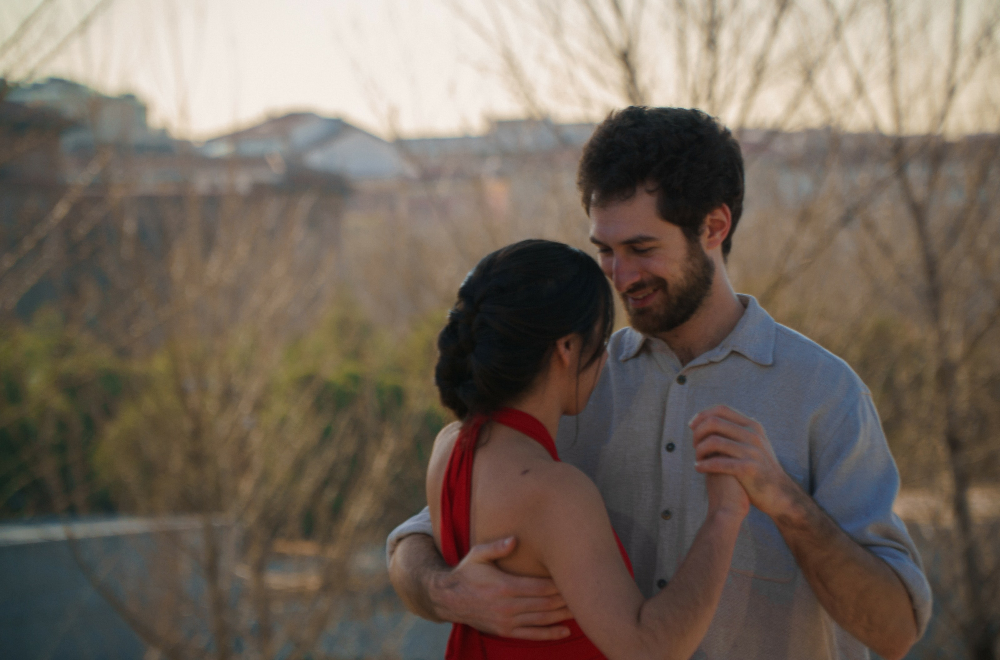
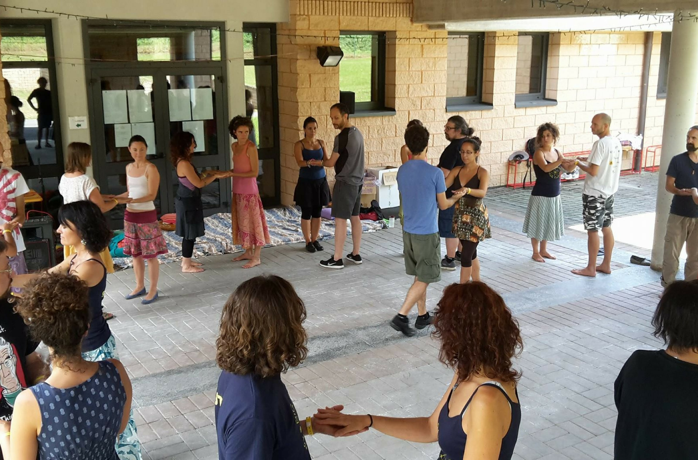
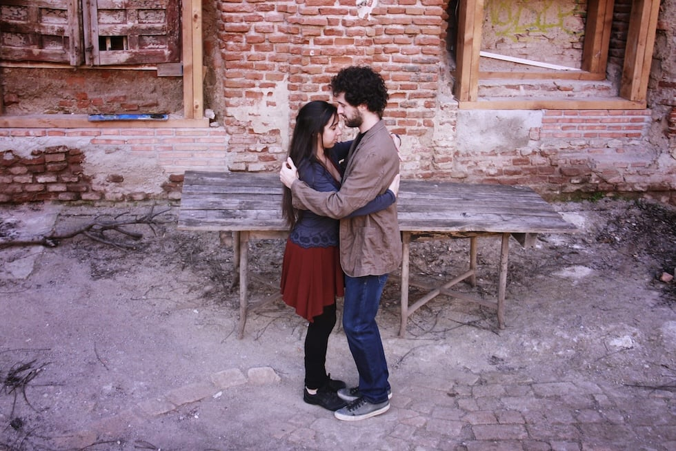

¿Qué es Folqué?
Folqué? es una asociación con sede en Madrid dedicada a promover el Bal Folk, un género vivo de música y danza que evoluciona constantemente, integrando tradición e innovación. Liderada por Francesco Palmeri y María Cubero, la asociación organiza eventos, talleres y actividades para difundir este género y acercarlo a más personas.
Desde conciertos y festivales hasta cursos y talleres, Folqué? ofrece una amplia variedad de actividades para todos los niveles, fomentando una comunidad vibrante y apasionada por el Bal Folk.
Eventos
En los años de trabajo de Folqué? llevamos organizados conciertos folk para bailar, talleres de baile y de instrumentos, animaciones, festivales, noches de baile y otras muchas actividades con la intención de dar a conocer el Folk como género de baile y promover su música y sus danzas en Madrid y alrededores.
Mira nuestros eventos en: AGENDA
Los lunes al Folk
Los lunes al Folk es la cita que se celebra en Rompeolas Locales cada dos lunes para dar a conocer el Balfolk en pleno centro de la ciudad. Bailarines, músicos y curiosos se reúnen para disfrutar de:
- 21h Clase abierta de Balfolk: aprende entre 3 y 5 bailes europeos cada semana.
- 22 Baile social: con nuestro DJ o vive la energía de Jam Sessions y conciertos con grupos emergentes.
Además, disfruta de buena compañía, cervezas y la oportunidad de conectar con nuevos proyectos musicales. ¿Eres músico? ¡Únete con tu instrumento! Aportación voluntaria. ¡Nos vemos el próximo lunes!
Bailando entre Montañas
Nuestro festival con mayor trayectoria. Un fin de semana de conciertos, talleres, excursiones, jams sessions y convivencia en plena sierra Madrileña. Un lugar de encuentro para apasionados del Balfolk y de la naturaleza, el lugar donde dar tus primeros pasos de baile o donde volar por la pista. Con programación de calidad, es sin duda un fin de semana único.
Cenizas
Residencia artística. Cenizas es el laboratorio internacional donde la danza se vive, se aprende y se reinventa. Un espacio donde 40 bailarines, profesores y organizadores de toda Europa se reúnen en la sierra de Madrid para compartir, co-crear y ¡cómo no! bailar mucho. Como un fénix renacemos, reconstruimos comunidades y lo hacemos de manera cooperativa. Compartimos saberes, sentimientos y herramientas que fortalecen la pedagogía y la cultura. Somos Europa, somos tradición y somos las danzas que están por venir.
Fenix Festival
Fénix Festival es el emocionante broche final de nuestra residencia artística CENIZAS. Un itinerario formativo de calidad durante dos días con más de 12 profesores de Balfolk de toda Europa, que después de una semana colaborando, comparten su experiencia y pasión por la danza. Fénix no es solo un festival, es un vuelo hacia el aprendizaje, la diversión y el crecimiento colectivo en un entorno natural inigualable. El Balfolk, evolución contemporánea de las tradiciones, sigue transformándose, y aquí lo exploramos juntos. Dos noches de conciertos, inmersión cultural y una comunidad vibrante te esperan.
Tango entre Montañas
Un fin de semana de tango y naturaleza. Un festival que es la fusión perfecta entre tango y naturaleza. Un fin de semana inolvidable con milongas al compás de orquestas en vivo, DJ's que animan la noche hasta el amanecer y talleres de tango que alimentan tu pasión por la danza. Disfruta de excursiones, sorpresas y la magia de bailar rodeado por la belleza de la sierra de Madrid. Un evento único donde el arte, la diversión y la conexión se encuentran en un entorno incomparable.
BASIL
BASIL (Baile, sociedad e iniciativas locales) es un proyecto que impulsa la cultura popular europea en España, apostando por jóvenes líderes y la inclusividad como motor de cambio. Desde talleres educativos hasta dinámicas grupales, este programa busca crear espacios seguros y vibrantes. Sus actividades incluyen "Los lunes al Folk", donde 20 jóvenes se forman para transmitir y revitalizar la tradición; webinars que fortalecen agrupaciones juveniles; y un gran encuentro nacional dedicado a la inclusión. BASIL no solo celebra la tradición, sino que también construye el futuro. ¡Súmate a este movimiento y transforma tu comunidad!
Talleres
Folqué? imparte diversos talleres de baile adaptados al público de
cada evento; desde talleres de iniciación para un primer
acercamiento al género hasta los talleres más avanzados para
bailarines experimentados.
Estos talleres suelen enfocarse en los aspectos más innovadores y
dinámicos del baile folk, incluyendo influencias ajenas al género
y centrándose en los aspectos más íntimos y rítmicos de los bailes
de pareja.
El método de Folqué? propone una constante mezcla entre enseñanza
e innovación en el baile. Por ello se utiliza una didáctica de
“recursos” en lugar de “pasos”, en vez de ofrecer una reseña de
pasos para que los alumnos monten una coreografía, se enseña la
técnica para desarrollarlos y crear un propio estilo de baile.
En los siguientes desplegables se muestra una descripción de los principales talleres que ofrecemos:
Tangurka
Fusión de dos danzas tradicionales que, a pesar de tener su origen en lugares alejados, encuentran un punto de conexión y se abrazan en un mismo espacio. Durante el taller se trabajan varios recursos tangueros, destinados a ofrecer un espacio para crear, dentro de la mazurka, una danza más libre, más abierta, más viva.
Monogáficos
Talleres para profundizar en cada una de las danzas; están orientados a bailarines que ya conocen las bases de los bailes y quieren enriquecer su estilo con diferentes recursos. Vemos variantes, musicalidad, conexión con la pareja e improvisación en la danza para crear un baile más rico.

Iniciación al Bal Folk
Un taller para empezar a dar los primeros pasos de baile. En este taller hacemos un recorrido por Europa, aprendiendo varios bailes del repertorio típico de cualquier concierto de Bal Folk: Mazurkas, Scottish, Círculo Circasiano, Chappeloisse, Bourrée, Vals... Se desarrollarán las bases de los bailes, proponiendo algunas variantes para que cada uno pueda crear su propio estilo.

Marca interactiva
Un taller donde aprender a llevar siguiendo, y a seguir
llevando; donde prima la escucha y donde los roles se funden
para crear un baile más nuevo, más dinámico, más bello.
Un taller más enfocado a la escucha que a la guía, donde tanto
los principiantes como los bailarines más avanzados encuentran
una visión rompedora de la danza.

Conexión en los bailes de pareja
Un taller pensado para bailarines de folk o de otras disciplinas de baile de parejas, como pueden ser Tango, Swing, Salsa... Cuya finalidad es entender la conexión en el baile, cómo se marca, cómo hacer para dejarse llevar... Trabajamos siempre los cambios de rol para entender desde el otro lado nuestra propia técnica.
Animación con música en vivo
Uno de los principales objetivos Folqué? consiste en dar a conocer el Bal Folk como género musical y estilo de baile. Por ello, desde antes de su constitución como asociación, Francesco Palmeri y María Cubero ya ofrecían animaciones en diferentes espacios contando con la colaboración de numerosos artistas.
Contamos con una amplia cartera de grupos madrileños con los que colaboramos, llevando a cada lugar una animación de baile única, que puede manifestarse de tres modos:
Concierto - taller de baile
Consiste en un concierto, el que antes de cada tema se dedica un breve tiempo a una explicación del baile. Es un formato muy dinámico que permite la integración de todo aquel que quiera lanzarse a la pista de baile en uno o varios temas.
Taller de baile + Concierto
Consiste en la separación de ambos conceptos, dando una pequeña clase de iniciación de los bailes que se tocarán después en un concierto. Se trata de la solución ideal para que los participantes puedan optar por hacer sólo una de las dos actividades.
Espectáculo de baile
ésta es una animación más adecuada en teatros con butacas o en espacios donde el público adopta una actitud más pasiva y no se involucra en el baile. Se realiza una muestra de baile en el escenario durante un concierto de calidad.
¿Qué es el Bal Folk?
El Bal Folk tiene raíces en la música y danza tradicionales de Europa, destacando por su apertura a la innovación y fusión con otros estilos, permitiendo que cada bailarín aporte su esencia a la danza.
Es un género vivo que evoluciona, conectándonos con la tradición mientras disfrutamos del placer de la danza en el presente, con una participación muy activa del público.
En un baile folk, se interpretan tanto composiciones tradicionales como actuales, con una gran variedad de danzas europeas como valses, mazurkas, polskas, bourrées, scottiches, círculos circasianos, chappelloises, fandangos vascos, andros, repasseados...
Nuestra visión
Nuestro objetivo es difundir el Bal Folk, llegar a más personas y disfrutar como comunidad de la música y el baile.
Creemos que la música y el baile son inseparables como expresiones culturales. Por ello, promovemos la música en vivo en nuestros eventos, apoyamos nuevos proyectos y celebramos el talento de artistas consolidados en este ámbito.
Promovemos una cultura accesible con precios populares, buscando un equilibrio que valore el trabajo de músicos, talleristas, organizadores y espacios, garantizando una compensación justa para todos.
Promovemos la igualdad de género en nuestros eventos y talleres, fomentando el intercambio de roles en el baile y la participación activa de mujeres en el escenario. Creemos en un folk inclusivo y coherente con valores de equidad y diversidad.
Quiénes somos?
Francesco Palmeri y María Cubero, dirigen sus esfuerzos en organizar multitud de eventos y actividades, con el fin de difundir este género de baile que les ha cautivado, y hacer que cada día, más y más gente pueda disfrutar de él.
Francesco Palmeri
Músico, desde 2005 comienza a tocar la guitarra, posteriormente, en 2010 conoce el Tango y el Bal Folk, acude a multitud de festivales, clases y talleres de Bal Folk para formarse y a partir de 2013 comienza a dar clases con regularidad. En 2012 funda y dinamiza una Jam Session Folk en Madrid y en 2014 su propio proyecto, un dúo de música Folk para baile llamado Akdeniz. A partir de 2015 comienza a dar talleres de Bal Folk por su cuenta, siempre enfocados en bailes con fuerte dificultad musical y, desde la fundación de Folqué? ese mismo año continua su trabajo con María Cubero, organizando las actividades de Folqué? y viajando por toda europa a enseñar algunos elementos del Bal Folk.
María Cubero
Su formación en materia de danza comienza en 1998 con el patinaje artístico, después de años de entrenamiento y competiciones, en 2004 comienza a impartir clases. En 2005 concoce el Bal Folk, , se enamora del género y participa de multitud de talleres por toda Europa formándose con los mejores bailarines del género. A partir de 2011 comienza a colaborar en clases de Bal Folk y en 2012 empieza a dar sus propios talleres o a colaborar con grupos para hacer animaciones; proyecto que continua en la actualidad con Francesco Palmeri y de la mano de Folqué? desde Septiembre de 2015 Su formación en materia de danza sufre una transformación en 2011 cuando conoce el Tango, elemento sustancial en su desarrollo profesional dedicando parte de su actividad docente a este área.
¿QUIERES COLABORAR? ¡HAZTE SOCI@ DE FOLQUÉ!
Ya llevamos 10 años trabajando por una escena folk madrileña que crezca y se expanda, y eso no sería posible sin vuestra ayuda.
¿Quieres ser parte de este movimiento y apoyar la labor de la asociación? Puedes hacerte socio/a productor/a. Nos comprometemos a apoyar la difusión del baile folk allí donde vivas, a pasarte enlaces con buena música para bailar y a enviarte un resumen anual de nuestras actividades. A cambio te pedimos una cuota de unos 10€ anuales, un donativo para que las cuentas de la asociación se alivien y podamos seguir trabajando y remunerando el trabajo de quienes colaboran.
Para apoyar la causa, solo tendrás que enviar un correo a folquemadrid@gmail.com indicando en el asunto SOCIO/A y tu nombre, y facilitando a continuarión tu nombre, apellido(s), DNI y fecha de nacimiento.